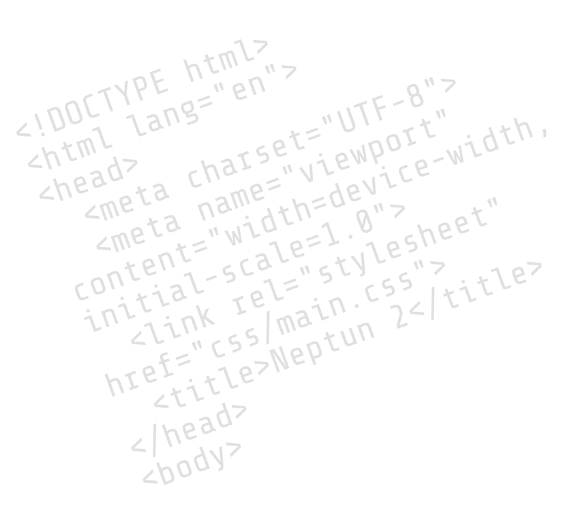

About Neptun 2
What is this?
Neptun 2 is an open source university manager software for students and teachers, developed by the CS students of the world. Currently under management by 3 BA Student of ELTE University in Budapest.
Ok, but why?
We all used the original Neptun before. This question is redundant.
Is it free to use?
It’s not only free, but recommended. Please do not use the original Neptun.
